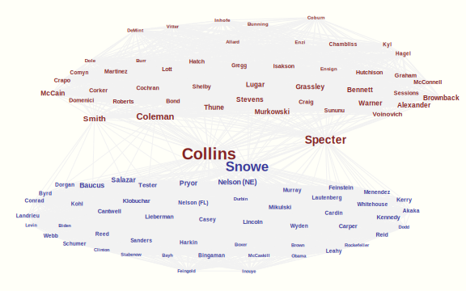

In this section, I note some other techniques one may come across, and others that will provide additional insight into machine learning applications.
Unsupervised learning generally speaking involves techniques in which we are utilizing unlabeled data. In this case we have our typical set of features we are interested in, but no particular response to map them to. In this situation we are more interested in the discovery of structure within the data.
Many of the techniques used in unsupervised are commonly taught in various applied disciplines as various forms of “cluster” analysis. The gist is that we are seeking an unknown class structure rather than seeing how various inputs relate to a known class structure. Common techniques include k-means, hierarchical clustering, and model based approaches (e.g. mixture models).
Sometimes the desire is to reduce the dimensionality of the inputs to a more manageable set of information. In this manner we are thinking that much of the data can be seen as having only a few sources of variability, often called latent variables or factors. Again, this takes familiar forms such as principal components and (“exploratory”) factor analysis, but would also include independence components analysis and partial least squares techniques. Note also that these can be part of a supervised technique (e.g. principal components regression) or the main focus of analysis (as with latent variable models in structural equation modeling).
 An example network graph of U.S. senators in 2006. Node size is based on the betweeness centrality measure, edge size the percent agreement (graph filtered to edges >= 65%). Color is based on the clustering discovered within the graph (link to data).
Other techniques are available to understand structure among observations or features. Among the many approaches is the popular network analysis, where we can obtain similarities among observations and examine visually the structure of those data points, where observations are placed closer together that are more similar in nature. In still other situations, we aren’t so interested in the structure as we are in modeling the relationships and making predictions from the correlations of inputs.
We can also use ML techniques when we are missing data, as a means to impute the missing values. While many are familiar with this problem and standard techniques for dealing with it, it may not be obvious that ML techniques may also be used. For example, both k-nearest neighbors and random forest techniques have been applied to imputation.
Imputation and related techniques may fall under the broad heading of matrix completion. Beyond this we can infer values that are otherwise unavailable in a different sense. Consider Netflix, Amazon and other sites that suggest various products based on what you already like or are interested in. In this case the suggested products have missing values for the user which are imputed or inferred based on their available data and other consumers similar to them who have rated the product in question. Such recommender systems are widely used these days.
In many situations we can combine the information of multiple models to enhance prediction. This can take place within a specific technique, e.g. random forests, or between models that utilize different techniques. I will discuss some standard techniques, but there are a great variety of forms in which model combination might take place.
Bagging, or bootstrap aggregation, uses bootstrap sampling to create many data sets on which a procedure is then performed. The final prediction is based on an average of all the predictions made for each observation. In general, bagging helps reduce the variance while leaving bias unaffected. A conceptual outline of the procedure is provided.
Model Generation
Classification
For each of \(t\) number of models:
The approach would be identical for the continuous target domain, where the final prediction would be the average across all models.
With boosting we take a different approach to refitting models. Consider a classification task in which we start with a basic learner and apply it to the data of interest. Next, the learner is refit, but with more weight (importance) given to misclassified observations. This process is repeated until some stopping rule is reached (e.g. reaching some \(M\) iterations). An example of the AdaBoost algorithm is provided (in the following \(\mathbb{I}\) is the indicator function).
Set initial weights \(w_i\) to \(1/N\).
for \(m=1:M\) {
Fit a classifier \(m\) with given weights to the data resulting in predictions \(f^{(m)}_i\) that minimizes some loss function.
Compute the error rate \(\text{err}_m = \frac{{\sum_{i=1}^N}\mathbb{I}(y_i\ne f^{(m)}_i)}{\sum^N_{i=1}w^{(m)}_i}\)
Compute \(\alpha_m = \log[(1-err_m)/err_m]\)
Set \(w_i \leftarrow w_i\exp[\alpha_m \mathbb{I}(y_i\ne f^{(m)}_i)]\)
}
Return \(\textrm{sign} [\sum^M_{m=1}\alpha_m f^{(m)}]\)
Boosting can be applied to a variety of tasks and loss functions, and in general is highly resistant to overfitting.
Stacking is a method that can generalize beyond a single fitting technique, though it can be applied in a fashion similar to boosting for a single technique. Here we will use it broadly to mean any method to combine models of different forms. Consider the four approaches we demonstrated earlier: k-nearest neighbors, neural net, random forest, and the support vector machine. We saw that they do not have the same predictive accuracy, though they weren’t bad in general. Perhaps by combining their respective efforts, we could get even better prediction than using any particular one.
The issue then is how we might combine them. We really don’t have to get too fancy with it, and can even use a simple voting scheme as in bagging. For each observation, note the predicted class on new data across models. The final prediction is the class that receives the most votes. Another approach would be to use a weighted vote, where the votes are weighted by the accuracy of their respective models.
Another approach would use the predictions on the test set to create a data set of just the predicted probabilities from each learning scheme. We can then use this data to train a meta-learner using the test labels as the response. With the final meta-learner chosen, we then retrain the original models on the entire data set (i.e. including the test data). In this manner the initial models and the meta-learner are trained separately and you get to eventually use the entire data set to train the original models. Now when new data becomes available, you feed them to the base level learners, get the predictions, and then feed the predictions to the meta-learner for the final prediction.
We hit on this topic some before, but much like there are a variety of ways to gauge performance, there are different approaches to select features and/or determine their importance. Invariably feature selection takes place from the outset when we choose what data to collect in the first place. Hopefully guided by theory, in other cases it may be restricted by user input, privacy issues, time constraints and so forth. But once we obtain the initial data set however, we may still want to trim the models under consideration.
In standard approaches we might have in the past used forward or other selection procedure, or perhaps some more explicit model comparison approach. Concerning the content here, take for instance the lasso regularization procedure we spoke of earlier. ‘Less important’ variables may be shrunk entirely to zero, and thus feature selection is an inherent part of the process, and is useful in the face of many, many predictors, sometimes outnumbering our sample points. As another example, consider any particular approach where the importance metric might be something like the drop in accuracy when the variable is excluded.
Variable importance was given almost full weight in the discussion of typical applied research in the past, based on statistical significance results from a one-shot analysis, and virtually ignorant of prediction on new data. We still have the ability to focus on feature performance with ML techniques, while shifting more of the focus toward prediction at the same time. For the uninitiated, it might require new ways of thinking about how one measures importance though.
In some situations the data of interest is not in a typical matrix form but in the form of textual content, e.g. a corpus of documents (loosely defined). In this case, much of the work (like in most analyses but perhaps even more so) will be in the data preparation, as text is rarely if ever in a ready-to-analyze state. The eventual goals may include using the discovery of latent topics, parts-of-speech tagging, sentiment analysis, language identification, word usage in the prediction of an outcome, or examining the structure of the term usage graphically as in a network model. In addition, machine learning processes might be applied to sounds (acoustic data) to discern the speech characteristics and other information.
It should be noted that the approaches outlined in this document are couched in the frequentist tradition. But one should be aware that many of the concepts and techniques would carry over into the Bayesian perspective, and even some machine learning techniques might only be feasible or make more sense within the Bayesian framework (e.g. online learning).
Aside from what has already been noted, there still exists a great many applications for ML such as data set shift43 Used when fundamental changes occur between the data a learner is trained on and the data coming in for further analysis., deep learning44 This includes learning at different levels of representation, e.g. from an image regarding a scene to the concepts used to describe it., semi-supervised learning45 Learning with both labeled and unlabeled data., online learning46 Learning from a continuous stream of data., and many more.
A standard mantra in machine learning and statistics generally is that there is no free lunch. All methods have certain assumptions, and if those don’t hold the results will be problematic at best. Also, even if in truth learner A is better than B, B can often outperform A in the finite situations we actually deal with in practice.
In general, without context, no algorithm can be said to be any better than another on average. Furthermore, being more complicated doesn’t mean a technique is better. As previously noted, simply incorporating regularization and cross-validation goes a long way toward to improving standard techniques, and may perform quite well in many situations. The basic conclusion is that
Machine learning is not magic!
ML does not prove your theories, it does not make your data better, and the days of impressing someone simply because you’re using it have long since past. Like any statistical technique, the reason to use ML is that is well-suited to the research or other problem at hand.
Here are some thoughts to keep in mind, though these may be applicable to applied statistical practice generally.
More data beats a cleverer algorithm, but a lot of data is not enough by itself Domingos (2012Domingos, Pedro. 2012. “A Few Useful Things to Know About Machine Learning.” Commun. ACM 55 (10). doi:10.1145/2347736.2347755.).
Avoid overfitting.
Let the data speak for itself.
“Nothing is more practical than a good theory.”47 Kurt Lewin, and iterated by V. Vapnik for the machine learning context.
While getting used to ML, it might be best to start from simpler approaches and then work towards more black box ones that require more tuning. For example, naive Bayes \(\rightarrow\) logistic regression \(\rightarrow\) knn \(\rightarrow\) svm.
Drawing up a visual path of your process is a good way to keep your analysis on the path to your goal. Some programs can even make this explicit.
Keep the tuning parameter/feature selection process separate from the final test process for assessing error.
Learn multiple models, selecting the best or possibly combining them.
It is hoped that this document sheds some light on some areas that might otherwise be unfamiliar to some applied researchers. The field of statistics has rapidly evolved over the past couple decades. The tools available are myriad, and expanding all the time. Rather than feeling intimidated or overwhelmed, one should embrace the choice available, and have some fun with your data!